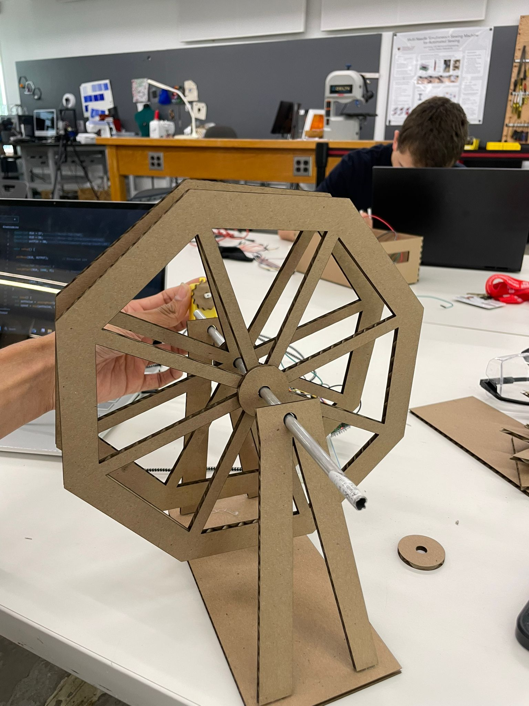
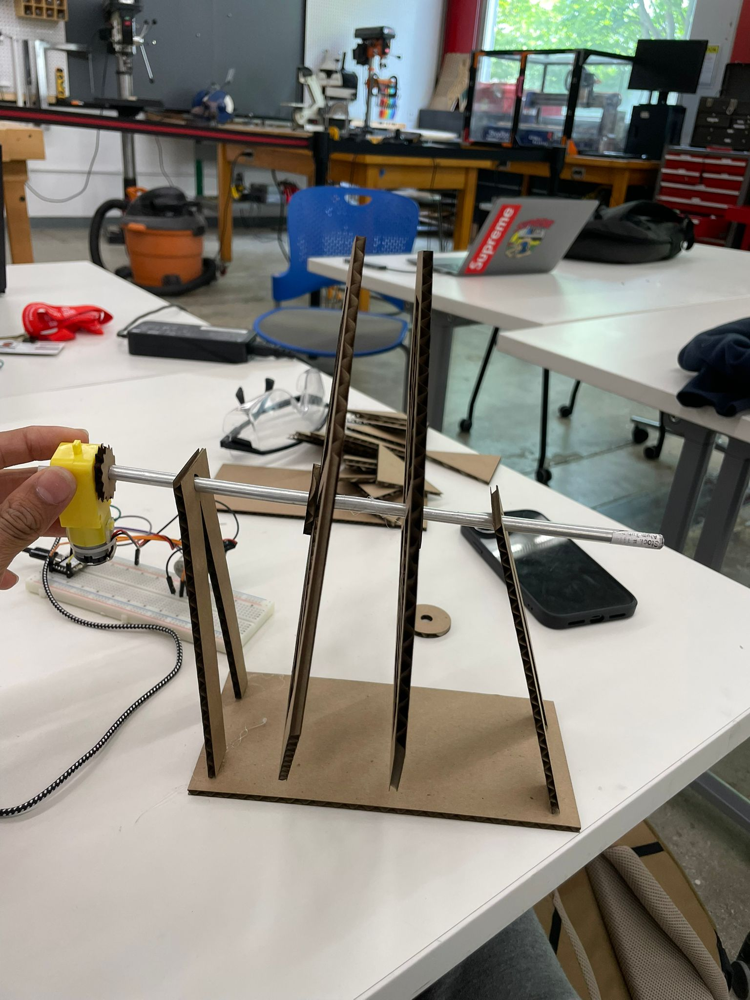
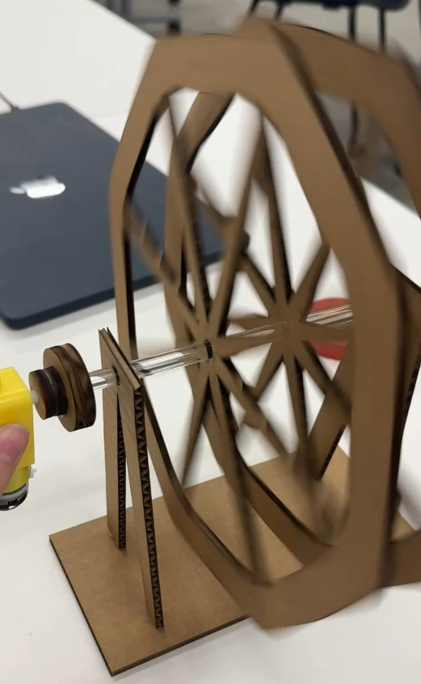
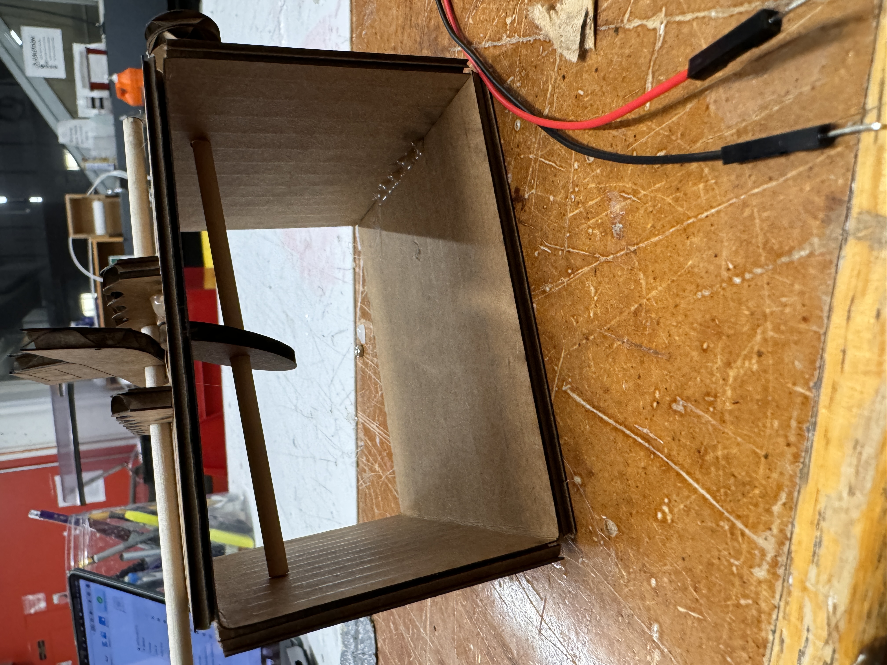
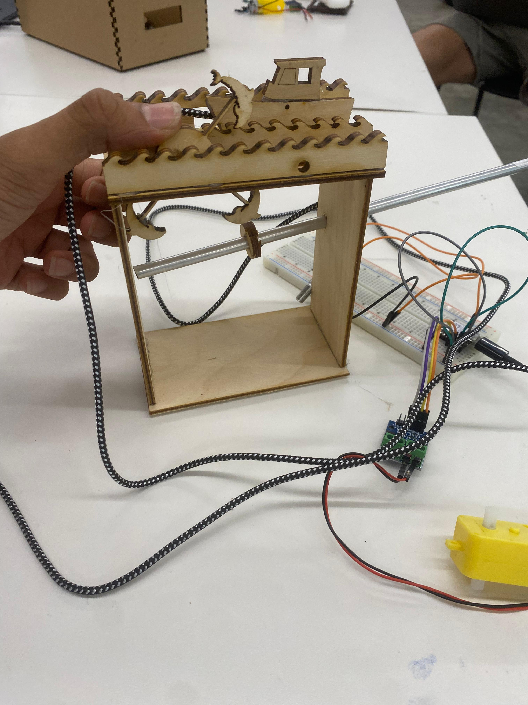
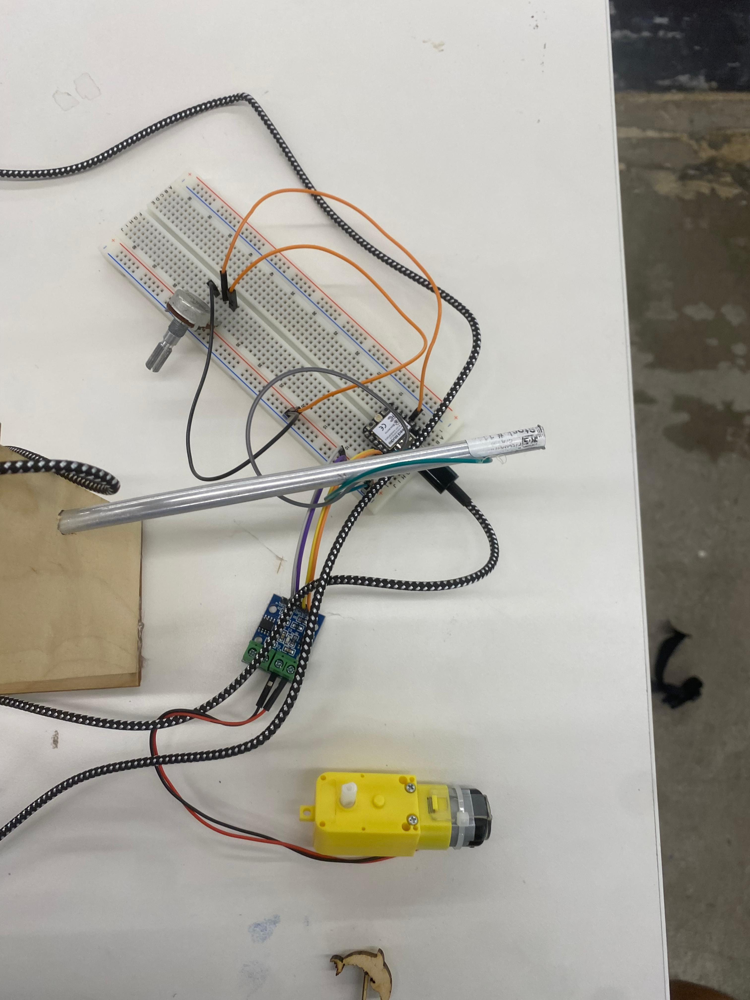
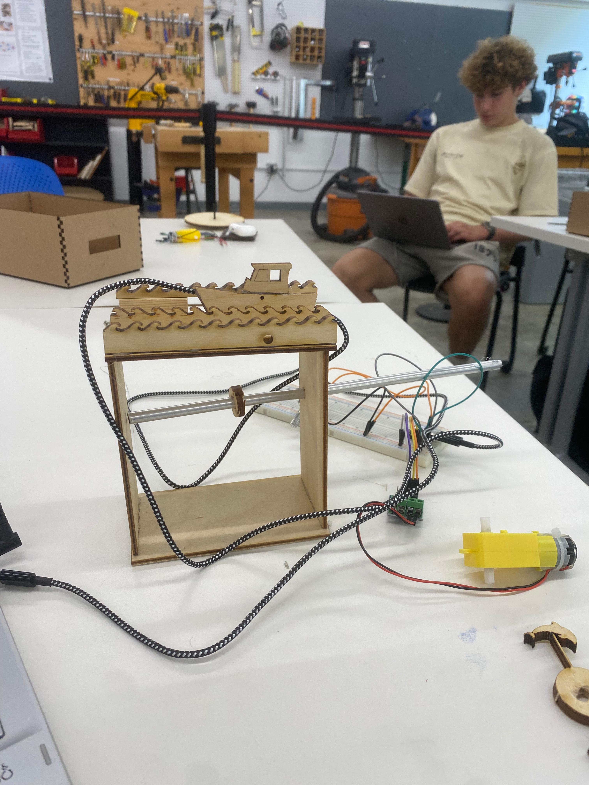
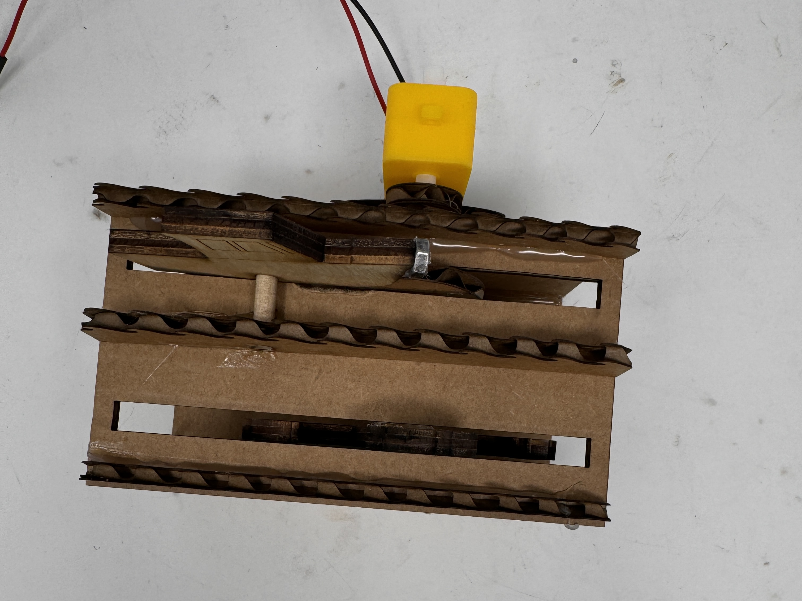
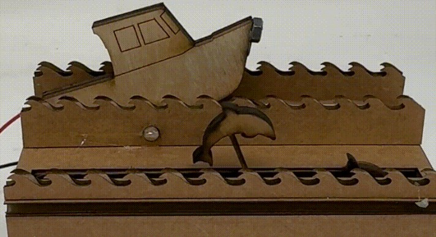

After a long aradous time pondering over what should be my kinetic sculpture I could not figure out what to go ahead with .I finaaly reached two ideas that I felt I could accomplish one of them being the ferris wheel.
I opted to begin by modeling the ferris wheel completely in Fusion, including the connection of both wheel sides to a connector . I understood that in order to properly create movement in the wheels, I needed to make it stable. I decided to print out my initial iteration on cardboard because I expected to make some mistakes. To design the wheel, I used an inscribed polygon and a set parameters . I then used guiding lines to draw rectangles that were tangent to the polygon, allowing me to cut pieces of it.

After finishing the fundamental foundations in Fusion, I went into the lab printed on the laser cutter. Before doing so, I searched the lab for a bridge that might be used to assist the wheel in turning. I measured it with calipers and found that it was 4.2mm, so I drilled holes in the wheels, buffers, and supports to allow the cylinder to pass through. I was quite pleased with how the initial print came out. The buffers between the stand, the motor, and the wheel fell apart quite quickly.

It worked wonderfully !!!!!!!!!!!!!!!
Much better than what I expected it to be
I then change it up a bit and instead of the steel rod as used in previous images used the

I throughouly enjoued this project ,Heres a short video demonstrating it.
Project 2:Kinetic sculpture
I could not settle oon what to do with the time I had on my hands and decided to do a secong project just for fun.This was and idea that came to me when Proff Nathan talked about in class.He gave an example about a past student who done a project on the lines of what I had done .I went over that students projedct (Ian Palk) you can go over his project a great showcase of what my project aimed to be but not what it is in reality.

.For this weeks Kinetic sculpture assignment i hought why not make a project involving sea waves animals and ships.In India especially Bombay where I am from the arabian sea covers the western side of the country .Usually during the monsoons charechterized by stormy seas,the daring fishermen go out on boats to catch fish .Since fish is considered a part of the staple diet.During their exploration they come across a dolphin and admire it.Hence the project.
The project entails with using motors attached to the dolphins there are three(3) dolphins that rotate about an axis as seen.There are three ocean wave cut outs between which the dolphins and boat are prensent.Them box side cutouts are basicaaly just two long cutouts and two small cutouts of a 3mm plywood .There is the wire cutouts.
After a long time of CAD usage in Fusion I modeled evry aspect of my project model onto fusion created what I exactly wanted it to be .

But let me tell you it was a pain the amount of hours I toiled into fusion to make the project work out was way more than what I wanted it to be .I had to put eveything else on a standby and worked on it for 3 straight days and just for the reason that I considered it to be fun .And it was.
Working on dimensions and creating about 4 sketches of it on the laser cutter I could see some amount of progress in the kinetic Project.
Although I know it is not grade but I just enjoy the thought of experimenting in various fields.
I got a new assignment but thought I will finish this one before starting the new one
After hours it came down to just one part .I had the dolphins printed out onto the wood piece .It was bascially 3 dolphins that rotated about its fixed axis while the ship connected to another motor chases after the dolfins amidst the waves of the sea .I just neede to attach the motor to the dolpins which posed to be a major problem

It was dumb of me to have believd that my work was over I soon about to realise that DIGITAL FABRICATION was tough nut to crack.I then went on spend 7 hours creating a snug fit that attached onto my motor .GUESS WHAT :I failed miserably 13 times in a row thats wher BOBBY THE SAVIOR scooped up to save the day .He gave a short fix method on how to do it through a diagrametic explaination of it on the board makin g sure that I understood everything and went on to make my own .Unfortunately I forgot to take avideo of how it worked and dissassembled my projct before updating my website.
